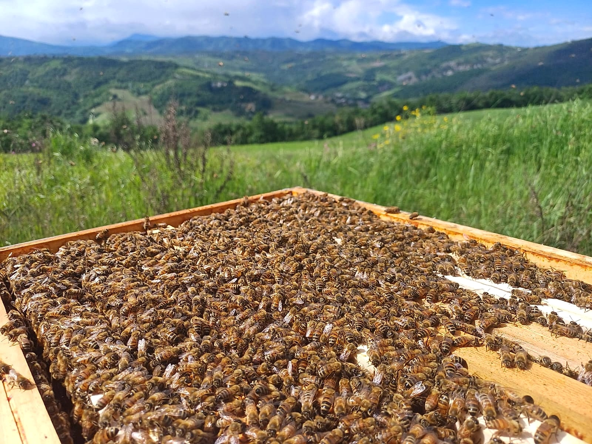
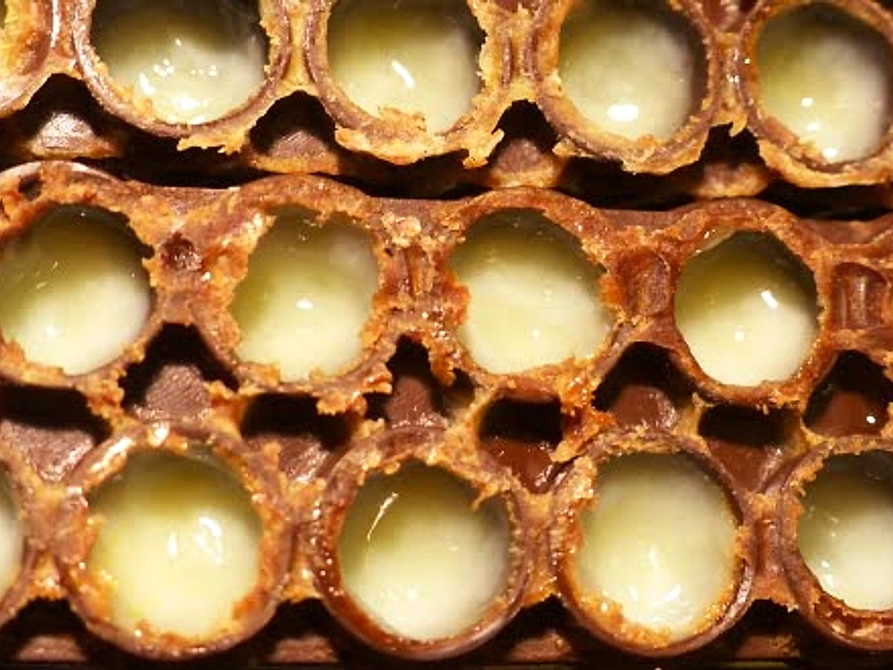
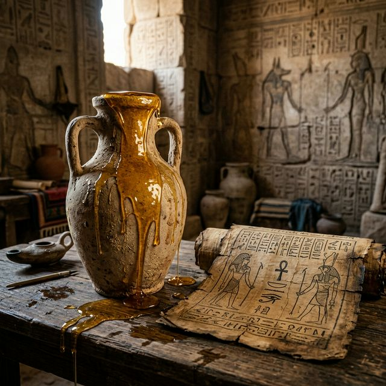
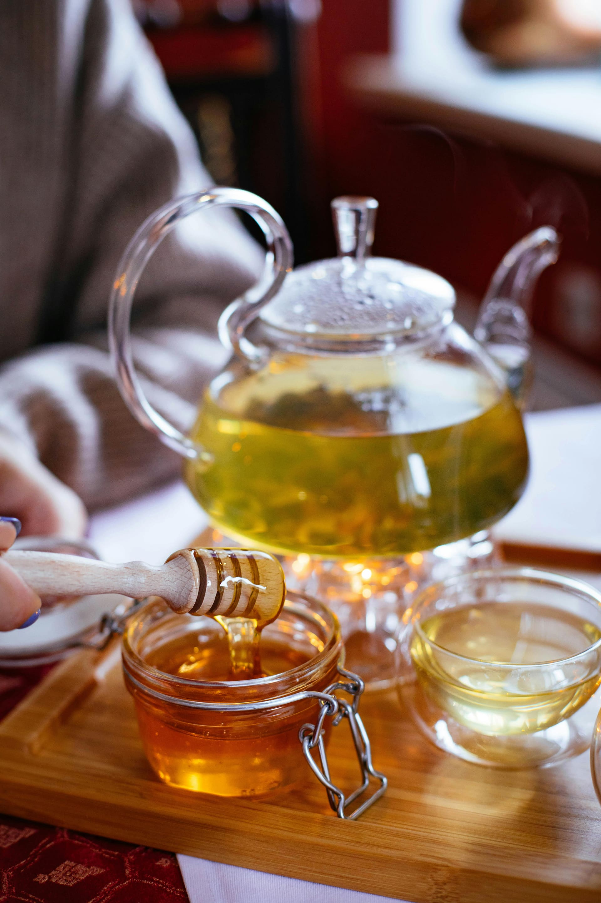
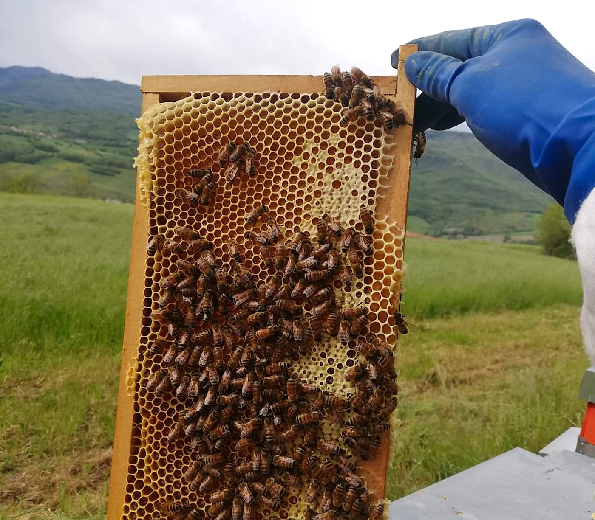
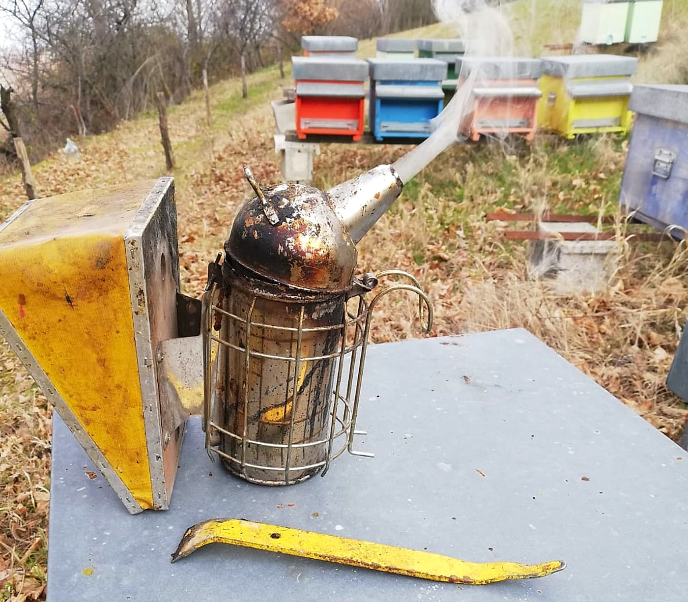

Curiosità dal Mondo delle Api
Scopri i segreti dell'alveare, le meraviglie della natura e il lavoro artigianale dietro ogni vasetto del nostro miele.

Il meraviglioso mondo delle api
Le api sono tra gli insetti più affascinanti e importanti per l'equilibrio della natura. Non solo producono miele, cera e pappa reale, ma svolgono un ruolo essenziale nell’impollinazione delle piante. Senza il loro lavoro silenzioso, molte colture alimentari scomparirebbero.
Un'ape può visitare fino a 7.000 fiori in un solo giorno. Dentro l'alveare, tutto è perfettamente organizzato: la regina depone le uova, le api operaie raccolgono nettare, polline e acqua, e i fuchi si occupano della riproduzione. Le api comunicano tra loro con movimenti precisi, come la celebre “danza dell’8”, che serve a indicare dove si trovano le fonti di nettare.

Pappa Reale: nutrimento regale
La pappa reale è una sostanza biancastra prodotta dalle api nutrici per alimentare le larve nei primi giorni di vita. Ma è l’ape regina a nutrirsi di pappa reale per tutta la vita: grazie a questo alimento, vive fino a 5 anni (contro poche settimane delle operaie) e può deporre fino a 2.000 uova al giorno.
È un alimento rarissimo e prezioso, molto richiesto per le sue proprietà benefiche:
- Ricchissima di vitamine del gruppo B (soprattutto B5 e B12)
- Contiene amminoacidi essenziali, proteine e sali minerali
- È fonte naturale di energia, vitalità e antiossidanti
Viene utilizzata come integratore per:
- Rinforzare il sistema immunitario
- Migliorare la concentrazione e le performance cognitive
- Contrastare l'invecchiamento cellulare
- Migliorare la pelle e i capelli

Il miele nella storia
Il miele accompagna l’umanità da migliaia di anni. È stato uno dei primi dolcificanti naturali usati dall’uomo, ben prima dello zucchero di canna o barbabietola. I geroglifici egizi mostrano scene di raccolta del miele, che veniva offerto agli dèi e utilizzato anche nei processi di imbalsamazione per le sue proprietà antibatteriche.
I Greci lo chiamavano “il cibo degli dèi” e lo consideravano simbolo di purezza e longevità. Nell’antica Roma era usato nei rituali religiosi e nelle ricette più raffinate. In molte culture, il miele era anche un rimedio medicinale, usato per guarire ferite, lenire la tosse o conservare gli alimenti.

Gli usi del miele: non solo a colazione
Il miele non è solo un alimento, ma un vero e proprio alleato naturale per il benessere. Ecco alcuni dei suoi utilizzi più interessanti:
- Rimedio naturale: grazie alle sue proprietà antibatteriche e antinfiammatorie, è un ottimo alleato contro tosse e mal di gola. Basta scioglierne un cucchiaino in una tazza di acqua calda con limone.
- Cosmetico: il miele è un ingrediente prezioso per la pelle: idrata, lenisce e nutre. Puoi usarlo come maschera viso o aggiungerlo al tuo shampoo per capelli lucenti.
- Conservante: grazie alla sua bassa umidità e all'elevato contenuto di zuccheri, il miele è un ottimo conservante naturale per frutta e verdura.
- Dolcificante alternativo: perfetto per dolcificare tè, tisane o yogurt, il miele è un'alternativa sana allo zucchero raffinato.

Raccolta e produzione del miele artigianale
La produzione del miele artigianale è un lavoro paziente, che segue il ritmo delle stagioni e il comportamento delle api. Tutto comincia con il posizionamento delle arnie nei campi, in zone ricche di fioriture: acacia, castagno, millefiori…
Le api raccolgono il nettare e lo trasformano in miele all’interno dei favi. Una volta che i favi sono maturi (sigillati con un tappo di cera), l’apicoltore li raccoglie, li disopercola (toglie la cera di chiusura) e li inserisce nello smielatore, una macchina che estrae il miele con la forza centrifuga.
Il miele viene poi filtrato, lasciato riposare e infine invasettato a mano, senza alcun trattamento termico o industriale, per conservarne tutte le proprietà nutritive e organolettiche.

Gli strumenti del mestiere: rispetto e delicatezza
Visitare un alveare richiede calma, esperienza e profondo rispetto per la famiglia di api. Gli strumenti tradizionali dell'apicoltore sono semplici ma fondamentali: la leva serve a sollevare delicatamente i telaini incollati dalle api con la preziosa propoli, mentre l'affumicatore produce un leggero fumo bianco naturale che tranquillizza le api durante le ispezioni.
Nel nostro apiario ogni arnia ha un colore e un simbolo dipinto a mano: questo non solo rende unico il paesaggio tra le colline, ma aiuta le api stesse a orientarsi e riconoscere subito la propria casa al ritorno dal volo di raccolta.